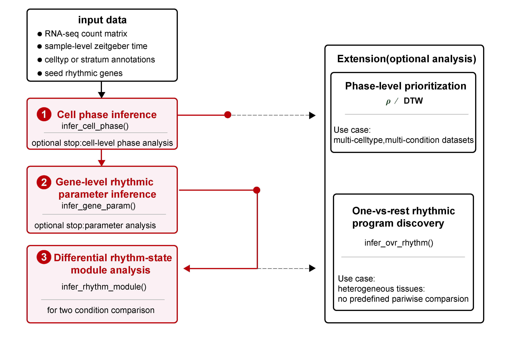

Cell-level circadian phase inference and rhythm-state remodeling for single-cell transcriptomes
scRhythmBayes is an R package for phase-resolved circadian analysis in heterogeneous single-cell transcriptomic data.
The package is designed to infer latent cell-level circadian phase, estimate gene-level rhythmic parameters, and characterize condition- and cell-type-resolved rhythm-state remodeling. It provides a core workflow for cell phase inference, rhythmic parameter estimation, and differential rhythm-state module analysis, together with extension analyses for one-vs-rest rhythmic program discovery, DTW-based phase-distribution similarity, and circular phase-concentration rho analysis.

Overview
scRhythmBayes organizes single-cell circadian analysis into one core workflow and several extension workflows.
Core workflow
The core workflow follows the main analysis logic of the method:
Cell-level circadian phase inference
Infer latent circadian phase for each cell from seed rhythmic genes.Gene-level rhythmic parameter inference
Estimate rhythmic parameters, including mesor, mean expression, amplitude, phase, dropout rate, likelihood-ratio statistics, and FDR.Differential rhythm-state module analysis
Classify genes into interpretable rhythm-state remodeling modules between two biological conditions.
Extension analyses
Additional analysis branches are provided for heterogeneous or multi-cell-type datasets:
One-vs-rest rhythmic program discovery
Identify cell-type-specific rhythmic programs by comparing one target cell type against all remaining cell types.DTW-based phase-distribution similarity analysis
Compare circular cell-phase distributions across celltype-by-condition combinations.Circular phase-concentration rho analysis
Summarize the concentration of inferred cell phases within cell types, groups, and optional sample-level units.
Installation
The package can be installed from GitHub:
install.packages("remotes")
remotes::install_github("Liwei-DynamicsLab/scRhythmBayes")Load the package:
Check the installed version:
packageVersion("scRhythmBayes")Note: if the GitHub repository is private, installation requires GitHub authentication and repository access.
Example data
scRhythmBayes includes an example dataset for testing the complete workflow.
data("srb_example_data")
names(srb_example_data)
dim(srb_example_data$Count)
class(srb_example_data$Count)
dim(srb_example_data$meta)
head(srb_example_data$meta)Example output:
[1] "Count" "meta" "truth"
[1] 138 2160
[1] "dgCMatrix"
attr(,"package")
[1] "Matrix"
[1] 2160 10
cell sample replicate ZT celltype condition T_true Theta_true Theta_noisy r_sim
Cell_0001_001 Cell_0001_001 A_ZT00_R1 1 0 1 A 23.7745644 6.22416640 6.0883578 0.7240322
Cell_0001_002 Cell_0001_002 A_ZT00_R1 1 0 1 A 23.7111107 6.20755425 6.0324486 0.6303893
Cell_0001_003 Cell_0001_003 A_ZT00_R1 1 0 1 A 22.2182691 5.81672924 5.8263271 0.8666633
Cell_0001_004 Cell_0001_004 A_ZT00_R1 1 0 1 A 0.5581621 0.14612650 0.2245110 0.8593562
Cell_0001_005 Cell_0001_005 A_ZT00_R1 1 0 1 A 0.7203817 0.18859549 0.3327113 0.6901345
Cell_0001_006 Cell_0001_006 A_ZT00_R1 1 0 1 A 0.1788832 0.04683152 0.1722017 0.7564754The example object contains:
| Object | Description |
|---|---|
srb_example_data$Count |
Gene-by-cell sparse count matrix with 138 genes and 2,160 cells |
srb_example_data$meta |
Cell-level metadata for 36 biological samples from two conditions, six ZT values, and three replicates |
srb_example_data$truth |
Gene-level M0–M7 and OVR truth, sample effects, and simulation settings |
Metadata columns:
| Column | Description |
|---|---|
cell |
Cell identifier matched to the count matrix column names |
sample |
Independent biological sample identifier |
replicate |
Biological replicate within each condition and ZT |
ZT |
Sampling Zeitgeber time |
celltype |
Simulated cell-type label |
condition |
Simulated group or condition label |
T_true |
Simulated true circadian time in hours |
Theta_true |
Simulated true circadian phase in radians |
Theta_noisy |
Simulated noisy cell phase in radians |
r_sim |
Simulated phase-reliability value |
T_true and Theta_true are available only in the simulated example dataset and are used for demonstration and validation. Real single-cell datasets usually do not contain these two columns.
Basic input objects:
count <- srb_example_data$Count
metadata <- srb_example_data$metaCore workflow
1. Infer cell-level circadian phase
res_phase <- infer_cell_phase(
count = srb_example_data$Count,
metadata = srb_example_data$meta,
ZT_by = "ZT",
strata_by = "celltype",
Species = "mouse",
setseed = 1,
Verbose = FALSE
)
head(res_phase)Example output:
# A tibble: 6 × 7
cell ZT_input stratum theta_pred ZT_pred Rbar r_cell
<chr> <dbl> <chr> <dbl> <dbl> <dbl> <dbl>
1 Cell_0001_001 0 1 6.19 23.6 0.992 0.999
2 Cell_0001_002 0 1 6.23 23.8 0.991 0.999
3 Cell_0001_003 0 1 6.00 22.9 0.991 0.999
4 Cell_0001_004 0 1 6.14 23.4 0.989 0.999
5 Cell_0001_005 0 1 0.142 0.543 0.992 0.999
6 Cell_0001_006 0 1 0.137 0.524 0.991 0.999Example output columns:
| Column | Description |
|---|---|
cell |
Cell barcode or cell ID |
ZT_input |
Observed sampling Zeitgeber time |
stratum |
Stratum used during phase inference |
theta_pred |
Inferred cell-level circadian phase in radians |
ZT_pred |
Inferred cell-level circadian phase converted to 24-hour time |
Rbar |
Aggregate phase concentration statistic |
r_cell |
Cell-level phase reliability weight |
2. Estimate gene-level rhythmic parameters
For a basic condition-comparison example, the gene-level model can be run within one cell type.
cell_use <- as.character(metadata$celltype) == "1"
count_use <- count[, cell_use, drop = FALSE]
metadata_use <- metadata[cell_use, , drop = FALSE]
res_param <- infer_gene_param(
count = count_use,
metadata = metadata_use,
theta_pred = res_phase$theta_pred[cell_use],
r_cell = res_phase$r_cell[cell_use],
strata_by = "condition",
ZT_by = "ZT",
sample_by = "sample",
sample_boot_by = "ZT",
B = 3,
n_worker = 1,
setseed = 1,
Verbose = FALSE
)
head(res_param$param_long)
head(res_param$param_wide)
res_param$inferenceMain outputs:
| Output | Description |
|---|---|
param_long |
Long-format gene-level rhythmic parameter estimates for each group |
param_wide |
Wide-format paired parameter table for downstream module analysis |
fit_diagnostics |
Cell-level working-likelihood fit diagnostics |
bootstrap_res |
Whole-sample bootstrap confidence interval results |
gene_eligibility |
Gene-level eligibility and sample-support diagnostics |
inference |
Sample-aware test mode, sample columns, and sample counts |
Common gene-level parameters include:
| Column | Description |
|---|---|
gene |
Gene name |
Mesor |
Baseline rhythmic expression level |
Mean |
Mean expression level |
Amplitude |
Circadian oscillation amplitude |
Amplitude_shrunk |
Joint MAP-shrunk rhythmic amplitude |
Phase |
Gene-level rhythmic phase in radians |
Alpha |
Dispersion-related parameter |
Dropout_rate |
Estimated dropout rate |
P_value |
Biological-sample cluster score-test P value |
FDR |
Multiple-testing adjusted sample-aware rhythmicity significance |
3. Infer differential rhythm-state modules
res_module <- infer_rhythm_module(
param_wide = res_param$param_wide,
compare_by = "condition",
group1 = "A",
group2 = "B",
Verbose = FALSE
)
head(
res_module$module_result[
c("gene", "FDR_A", "FDR_B", "module_map", "module_name")
]
)Example output:
# A tibble: 6 × 5
gene FDR_A FDR_B module_map module_name
<chr> <dbl> <dbl> <int> <chr>
1 M0G01 0.968 0.995 0 Non-rhythmic
2 M0G02 0.282 0.518 0 Non-rhythmic
3 M0G03 0.126 0.715 0 Non-rhythmic
4 M0G04 0.516 0.472 0 Non-rhythmic
5 M0G05 0.105 0.0661 0 Non-rhythmic
6 M0G06 0.381 0.0967 0 Non-rhythmicThe module analysis assigns genes to interpretable rhythm-state remodeling classes based on rhythmicity, amplitude remodeling, and phase remodeling between two groups.
4. Visualize rhythm-state modules
hm_module <- plot_module_heatmap(
count = count_use,
res_phase = res_phase[cell_use, , drop = FALSE],
gene_meta = res_module$module_result,
metadata = metadata_use,
group_by = "condition",
group1 = "A",
group2 = "B"
)
hm_module
plot(hm_module, module_id = 0)
p_polar <- plot_module_polar(
gene_meta = res_module$module_result,
module_id = 7,
group1 = "A",
group2 = "B"
)
p_polar$plotExtension workflow 1: one-vs-rest rhythmic program discovery
The one-vs-rest branch is designed for heterogeneous tissues or multi-cell-type datasets. It compares each target cell type against all remaining cell types to identify cell-type-specific rhythmic programs.
res_ovr <- infer_ovr_rhythm(
count = count,
metadata = metadata,
theta_pred = res_phase$theta_pred,
r_cell = res_phase$r_cell,
group_by = "celltype",
ZT_by = "ZT",
target_groups = "1",
q_cut = 0.05,
amp_cut = 0.25,
sample_by = "sample",
sample_boot_by = "ZT",
B = 3,
n_worker = 1,
setseed = 1,
Verbose = FALSE
)
res_ovr$ovr_summary
head(res_ovr$ovr_markers)Example output:
# A tibble: 1 × 2
celltype n_marker
<chr> <int>
1 1 5
# A tibble: 5 × 17
gene celltype Mesor_target Mesor_rest Delta_Mesor Mean_target Mean_rest Delta_Mean Amplitude_target Amplitude_rest Delta_Amp Phase_target Phase_rest Delta_Phase FDR_target FDR_rest ovr_marker
<chr> <chr> <dbl> <dbl> <dbl> <dbl> <dbl> <dbl> <dbl> <dbl> <dbl> <dbl> <dbl> <dbl> <dbl> <dbl> <lgl>
1 OVR1G01 1 1.54 1.62 -0.0793 4.66 5.05 -0.385 1.32 0.0528 1.27 1.07 2.10 -1.02 0.000123 0.536 TRUE
2 OVR1G02 1 1.41 1.46 -0.0524 4.08 4.30 -0.219 1.39 0.0173 1.37 2.05 5.78 2.56 0.000123 0.925 TRUE
3 OVR1G03 1 1.45 1.60 -0.155 4.25 4.96 -0.710 1.34 0.0443 1.29 3.07 3.74 -0.663 0.000123 0.542 TRUE
4 OVR1G04 1 1.84 1.84 -0.00477 6.29 6.32 -0.0301 1.26 0.0687 1.19 4.17 1.64 2.52 0.000123 0.295 TRUE
5 OVR1G06 1 1.69 1.78 -0.0971 5.39 5.94 -0.550 1.40 0.0423 1.36 6.27 5.10 1.16 0.000123 0.579 TRUEVisualize one-vs-rest rhythmic programs:
plot_ovr_curve(
res_ovr,
genes = res_ovr$ovr_markers$gene[1],
target_group = "1"
)
ht_ovr <- plot_ovr_heatmap(
count = count,
res_phase = res_phase,
ovr_result = res_ovr$ovr_result,
metadata = metadata,
celltype_by = "celltype",
Verbose = FALSE
)
ht_ovr
plot(ht_ovr)Main output columns:
| Column | Description |
|---|---|
gene |
Gene name |
celltype |
Target cell type |
Mesor_target, Mesor_rest
|
Mesor in target and pooled rest groups |
FDR_target, FDR_rest
|
Sample-aware rhythmicity FDR in target and rest groups |
Mean_target, Mean_rest
|
Mean expression in target and rest groups |
Amplitude_target, Amplitude_rest
|
Rhythmic amplitude in target and rest groups |
Phase_target, Phase_rest
|
Rhythmic phase in target and rest groups |
Delta_Mean |
Target-minus-rest mean difference |
Delta_Amp |
Target-minus-rest amplitude difference |
Delta_Phase |
Circular target-minus-rest phase difference |
ovr_marker |
Whether the gene is classified as a target-specific rhythmic marker |
Extension workflow 2: DTW-based phase-distribution similarity
The DTW branch compares circular phase distributions between celltype-by-condition combinations.
dtw_res <- run_dtw_similarity(
res_phase = res_phase,
metadata = metadata,
celltype_by = "celltype",
group_by = "condition",
n_bin = 24,
min_cell = 10,
normalize_distance = TRUE,
Verbose = FALSE
)
dtw_res
head(dtw_res$histogram)
dtw_res$similarityExample histogram output:
combo cell_type Group bin bin_start bin_end bin_mid prop
1 1 | A 1 A 1 0.0000000 0.2617994 0.1308997 0.05833333
2 1 | A 1 A 2 0.2617994 0.5235988 0.3926991 0.02222222
3 1 | A 1 A 3 0.5235988 0.7853982 0.6544985 0.01666667
4 1 | A 1 A 4 0.7853982 1.0471976 0.9162979 0.06388889
5 1 | A 1 A 5 1.0471976 1.3089969 1.1780972 0.07500000
6 1 | A 1 A 6 1.3089969 1.5707963 1.4398966 0.01111111Example similarity matrix:
1 | A 1 | B 2 | A 2 | B 3 | A 3 | B
1 | A 1.0000000 0.4730539 0.2743924 0.1117194 0.2089335 0.3072317
1 | B 0.4730539 1.0000000 0.0807574 0.1062086 0.0000000 0.1623240
2 | A 0.2743924 0.0807574 1.0000000 0.8754491 0.9337795 1.0000000
2 | B 0.1117194 0.1062086 0.8754491 1.0000000 0.8323353 0.9520958
3 | A 0.2089335 0.0000000 0.9337795 0.8323353 1.0000000 0.9628112
3 | B 0.3072317 0.1623240 1.0000000 0.9520958 0.9628112 1.0000000Plot DTW similarity heatmap:
ht_dtw <- plot_dtw_heatmap(
dtw_res = dtw_res
)
ht_dtw
plot(ht_dtw)Main outputs:
| Output | Description |
|---|---|
data |
Merged cell-level phase and metadata table |
histogram |
Circular phase histogram for each celltype-by-group combination |
distance |
Pairwise DTW distance matrix |
similarity |
Scaled 0-to-1 DTW similarity matrix |
annotation |
Annotation table for heatmap rows and columns |
Extension workflow 3: circular phase-concentration rho analysis
The rho branch summarizes how concentrated inferred cell phases are within each cell type and condition.
Group-level rho summary
rho_res <- run_phase_rho(
res_phase = res_phase,
metadata = metadata,
celltype_by = "celltype",
group_by = "condition",
theta_by = "theta_pred",
group_levels = c("A", "B"),
min_cell = 10,
Verbose = FALSE
)
rho_resPlot rho values:
p_rho <- plot_phase_rho(rho_res)
p_rho$plotSample-level rho summary
If a sample column is available, run_phase_rho() can also summarize rho at the sample level and perform sample-level group comparisons within each cell type.
The example dataset contains 36 independent biological samples in the sample column.
rho_res_sample <- run_phase_rho(
res_phase = res_phase,
metadata = metadata,
celltype_by = "celltype",
group_by = "condition",
sample_by = "sample",
theta_by = "theta_pred",
group_levels = c("A", "B"),
compare_groups = c("A", "B"),
min_cell = 10,
Verbose = FALSE
)
head(rho_res_sample$rho_sample)Example sample-level rho output:
cell_type Group Sample n_cell rho mean_phase_rad mean_phase_hour
1 1 A A_ZT00_R1 20 0.9812679 0.007222493 0.02758789
2 1 A A_ZT00_R2 20 0.9727272 6.261130650 23.91575741
3 1 A A_ZT00_R3 20 0.9724092 0.065011902 0.24832717
4 1 A A_ZT04_R1 20 0.9904582 1.116099149 4.26318472
5 1 A A_ZT04_R2 20 0.9595515 1.022346888 3.90507746
6 1 A A_ZT04_R3 20 0.9838027 0.999653055 3.81839340Plot sample-level rho values:
p_rho_sample <- plot_phase_rho(rho_res_sample)
p_rho_sample$plotTutorials
Detailed tutorials are available through the pkgdown documentation website. These tutorials mirror the main analysis branches of scRhythmBayes and include step-by-step examples, output interpretation, and figure-generation workflows.
Extension analyses
- Rhythm-state module analysis
- One-vs-rest rhythmic program discovery
- DTW and rho phase-prioritization analysis
The full documentation website is available at:
Main functions
Core workflow
| Function | Description |
|---|---|
infer_cell_phase() |
Infer cell-level circadian phase |
infer_gene_param() |
Estimate gene-level rhythmic parameters |
infer_rhythm_module() |
Infer differential rhythm-state modules |
plot_module_heatmap() |
Plot rhythm-state module heatmap |
plot_module_polar() |
Plot rhythm modules on polar coordinates |
Phase visualization
| Function | Description |
|---|---|
plot_phase_scatter() |
Compare inferred phase with sampling time |
plot_phase_circle() |
Visualize circular cell-phase distributions |
plot_phase_flower() |
Visualize phase distributions by sampling time |
plot_phase_rose() |
Plot rose-style phase distributions |
Extension analyses
| Function | Description |
|---|---|
infer_ovr_rhythm() |
Identify one-vs-rest cell-type-specific rhythmic programs |
plot_ovr_curve() |
Plot model-fitted target-versus-rest rhythmic curves |
plot_ovr_heatmap() |
Plot one-vs-rest rhythm-state heatmap |
run_dtw_similarity() |
Run DTW-based phase-distribution similarity analysis |
plot_dtw_heatmap() |
Plot DTW similarity or distance heatmap |
run_phase_rho() |
Summarize circular phase concentration rho |
plot_phase_rho() |
Plot rho by cell type and group |
Notes
scRhythmBayes is intended for phase-resolved analysis of single-cell transcriptomic datasets where cells are collected across circadian or time-of-day sampling points. The core workflow focuses on latent cell-phase inference and rhythm-state remodeling analysis. The extension workflows support additional biological questions, including cell-type-specific rhythmic program discovery and comparison of inferred phase distributions across cell types and conditions.
The package is under active development. Function interfaces and tutorials may be updated as the manuscript and reproducibility workflows are finalized.